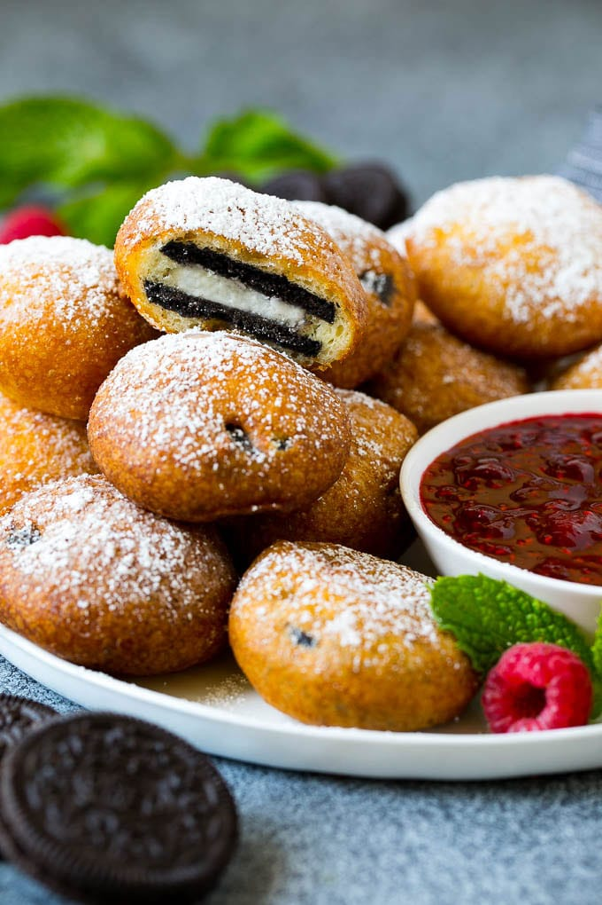

Deep-fried Oreos

Description
You know 'em, you love 'em. Now you cook 'em.
Honestly are these overhyped? I feel like when you get them at the fair,
they're always calling for something more. Perhaps some ice cream? Some sort of incredible dipping sauce?
Left as a challenge for the reader.
Ingredients
- Vegetable oil
- Milk
- 1 egg
- Pancake mix
- Oreos
Steps
- Heat oil in a deep fryer or large saucepan to 375 degrees F (190 degrees C).
- Whisk milk, egg, and 2 teaspoons of vegetable oil in a large bowl until smooth. Stir in the pancake mix until no dry lumps remain.
- Dip cookies into batter, one at a time, and carefully place into hot oil. Fry in batches, 4 or 5 at a time, until cookies are golden brown, about 2 minutes. Drain on a paper towel-lined plate before serving.